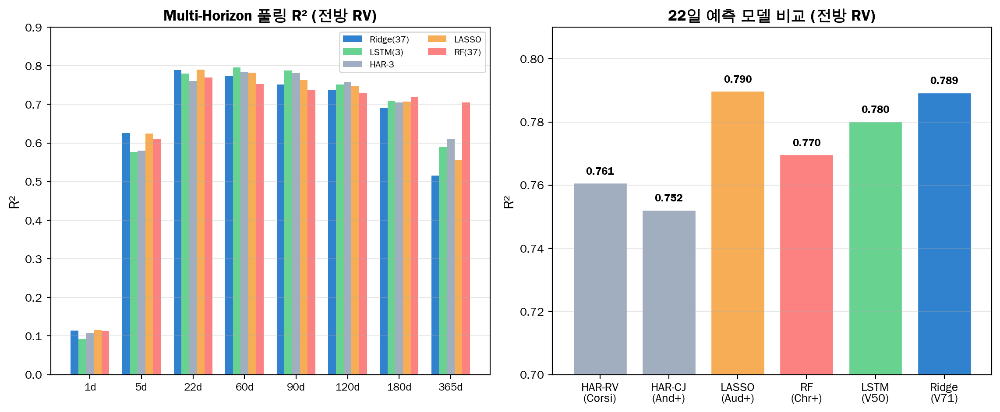

모델 아키텍처 비교
Multi-Horizon 예측 지평별 최적 모델 분석 (전방 RV)
Multi-Horizon 예측 모델 비교
전방 Realized Volatility 타겟으로 1일~365일 8개 예측 기간에서 7개 모델을 체계적으로 비교합니다.
핵심 발견 (전방 RV, 11개 자산 풀링)
- 단기 (1~22d): V71 Ensemble (37feat, 22d: 0.803)
- 중기 (60~90d): V50 Tuned LSTM (3feat, 60d: 0.796)
- 초장기 (365d): Random Forest (37feat, 0.705)
- 문헌 벤치마크: HAR-CJ, LASSO-HAR, RF와 체계적 비교
1. Multi-Horizon 풀링 R² 비교
Horizon별 풀링 R² (전방 RV)
| Horizon | Ridge(37) | LSTM(3) | HAR-3 | LASSO | HAR-CJ | RF(37) | 챔피언 |
|---|---|---|---|---|---|---|---|
| 1d | 0.114 | 0.092 | 0.109 | 0.116 | 0.106 | 0.113 | LASSO |
| 5d | 0.625 | 0.577 | 0.581 | 0.625 | 0.569 | 0.611 | Ridge |
| 22d | 0.798 | 0.780 | 0.761 | 0.790 | 0.752 | 0.770 | Ridge(V71) |
| 60d | 0.774 | 0.796 | 0.784 | 0.782 | 0.771 | 0.752 | LSTM |
| 90d | 0.752 | 0.788 | 0.781 | 0.763 | 0.768 | 0.737 | LSTM |
| 120d | 0.737 | 0.751 | 0.758 | 0.748 | 0.746 | 0.730 | HAR-3 |
| 180d | 0.691 | 0.708 | 0.705 | 0.707 | 0.691 | 0.719 | RF |
| 365d | 0.516 | 0.589 | 0.611 | 0.555 | 0.570 | 0.705 | RF |
2. V50 Tuned (중기 예측 챔피언)
아키텍처
코드
%%{init: {'theme': 'base', 'themeVariables': { 'primaryColor': '#E3F2FD', 'primaryTextColor': '#1565C0'}}}%%
flowchart TD
A["시퀀스 22일 x 3 피처"] --> B["Bi-LSTM (hidden=32)"]
B --> C["Temporal Attention"]
C --> D["FC(64→1)"]
D --> E["Forward RV 예측"]
style A fill:#E3F2FD,stroke:#1565C0
style B fill:#E8F5E9,stroke:#2E7D32
style C fill:#FFF3E0,stroke:#E65100
style D fill:#F3E5F5,stroke:#7B1FA2
style E fill:#F3E5F5,stroke:#7B1FA2%%{init: {'theme': 'base', 'themeVariables': { 'primaryColor': '#E3F2FD', 'primaryTextColor': '#1565C0'}}}%%
flowchart TD
A["시퀀스 22일 x 3 피처"] --> B["Bi-LSTM (hidden=32)"]
B --> C["Temporal Attention"]
C --> D["FC(64→1)"]
D --> E["Forward RV 예측"]
style A fill:#E3F2FD,stroke:#1565C0
style B fill:#E8F5E9,stroke:#2E7D32
style C fill:#FFF3E0,stroke:#E65100
style D fill:#F3E5F5,stroke:#7B1FA2
style E fill:#F3E5F5,stroke:#7B1FA2
하이퍼파라미터
| 파라미터 | 값 | 비고 |
|---|---|---|
| Input Features | 3 | RogersSatchell, GarmanKlass, Range_Close_Ratio |
| LSTM Hidden | 32 | 양방향 → 64차원 |
| Dropout | 0.2 | 정규화 |
| Batch Size | 128 | |
| 강점 | 60~90d | 중기 풀링 R² 최고, 전 구간 중위 R² 최고 |
3. V71 Ridge (단기 예측 챔피언)
아키텍처
코드
%%{init: {'theme': 'base', 'themeVariables': { 'primaryColor': '#E3F2FD', 'primaryTextColor': '#1565C0'}}}%%
flowchart LR
A["OHLCV + 옵션 데이터"] --> B["37개 피처\n(HAR+HF+IV+Alt)"]
B --> C["Ridge Regression"]
C --> D["22d R²=0.803\n(Ensemble)"]
style A fill:#E3F2FD,stroke:#1565C0
style B fill:#E8F5E9,stroke:#2E7D32
style C fill:#FFF3E0,stroke:#E65100
style D fill:#F3E5F5,stroke:#7B1FA2%%{init: {'theme': 'base', 'themeVariables': { 'primaryColor': '#E3F2FD', 'primaryTextColor': '#1565C0'}}}%%
flowchart LR
A["OHLCV + 옵션 데이터"] --> B["37개 피처\n(HAR+HF+IV+Alt)"]
B --> C["Ridge Regression"]
C --> D["22d R²=0.803\n(Ensemble)"]
style A fill:#E3F2FD,stroke:#1565C0
style B fill:#E8F5E9,stroke:#2E7D32
style C fill:#FFF3E0,stroke:#E65100
style D fill:#F3E5F5,stroke:#7B1FA2
피처 구성 (37개)
| 카테고리 | 피처 수 | 주요 피처 |
|---|---|---|
| Base (HAR+GARCH) | 14 | LogRV lags, GARCH, Vol-of-Vol |
| HF Proxy (OHLC) | 7 | Rogers-Satchell, Garman-Klass, Parkinson |
| IV Surface | 10 | VIX, VIX3M, VIX Term, VRP |
| Alt Data | 6 | Amihud, Volume, Order Imbalance |
4. 문헌 벤치마크
| 모델 | 출처 | 22d R² | 365d R² | 설명 |
|---|---|---|---|---|
| HAR-RV | Corsi (2009) | 0.761 | 0.611 | 3개 HAR 피처 Ridge |
| HAR-CJ | Andersen+ (2007) | 0.752 | 0.570 | Jump 분해 (Bipower Variation) |
| LASSO-HAR | Audrino & Knaus (2016) | 0.790 | 0.555 | 37개 피처 L1 정규화 |
| RF | Christensen+ (2023) | 0.770 | 0.705 | 37개 피처 Random Forest |
5. 왜 예측 지평에 따라 최적 모델이 다른가?
| 특성 | 단기 (1~22d) | 중기 (60~90d) | 초장기 (365d) |
|---|---|---|---|
| 시그널 | HAR 자기상관 강함 | Range 추정량 유효 | 노이즈 지배적 |
| 최적 모델 | Ridge/LASSO (37feat) | LSTM (3feat) | RF (37feat) |
| 핵심 요인 | 피처 수 | Range 피처 선택 + DL | 트리 앙상블 강건성 |
| 과적합 위험 | 낮음 | 중간 | 낮음 |
핵심 인사이트
- V71 Ensemble이 22d에서 R²=0.803으로 최고 성능: Ridge(0.798) + XGBoost(0.773)의 가중 앙상블 효과
- LSTM은 3개 피처만으로 37개 피처 선형 모델을 60~90d에서 능가: 피처 선택이 중요
- RF는 365d에서 유일하게 R²>0.7 달성: 트리 앙상블의 장기 안정성
관련 자료
- V50 상세 분석 - 중기 예측 챔피언
- V71 상세 분석 - 단기 예측 챔피언
- V71 강건성 검증 - 6종 강건성 테스트
- 결과 요약 - 전체 실험 통계